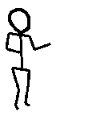

dedicate a la naturaleza.
Cultiva tu interior y ella hará que
brote belleza de todos tus poros.
No seas aburrida. ¡ Tú puedes !
Todos podemos.
Entonces ... ¡¡¡ Vamos !!!
"Vive Mejor"



"Vive
Mejor"
Haz como los pájaros:
comienza el día cantando.
La música es alimento para el espíritu.
Canta cualquier cosa, canta desafinando, pero canta.
Cantar dilata los pulmones y abre el alma
para todo lo bueno que la vida te ofrece.
Si insistes en no cantar,
por lo menos escucha mucha música
y déjate
llevar por ella
Ríete de la vida,
ríete de los problemas,
ríete de ti misma.
La gente comienza a ser feliz
cuando es capaz de reírse de sí misma.
Ríete de las cosas buenas que te suceden.
Ríete abiertamente para que todos
se puedan contagiar de tu alegría.
No te dejes abatir por los problemas.
Si procuras convencerte de que
estás bien, vas a terminar convenciéndote
de que realmente lo estás,
y cuando menos lo pienses
te vas a sentir realmente bien.
El buen humor, así como
el mal humor, se contagian.
¿Cual de ellos vas a escoger?
Si estás de buen humor,
las personas a tu alrededor también
lo estarán y eso te dará mas fuerza.
Lee cosas positivas.
Lee buenos libros, lee poesía,
porque la poesía es el arte
de aceitar el alma.
Lee romances, historias de amor,
o cualquier cosa que reavive tus
sentimientos mas íntimos, y mas puros.
Practica algún deporte.
El peso de la cabeza es
muy grande y tiene que ser
contrabalanceado con algo.
Además te vas a sentir bien dispuesta,
mas animada, mas joven.
Encara tus obligaciones con satisfacción.
Es maravilloso disfrutar lo que se hace.
Pon amor en todo lo que está a tu alcance.
Cuando te propongas hacer algo,
¡ sumergete de cabeza !
No dejes escapar las oportunidades
que la vida te ofrece. No vuelven.
No eres tú la que está pasando,
son las oportunidades que dejas ir.
Ninguna barrera es infranqueable si
estás dispuesta a luchar contra ella.
Si tus propósitos son positivos,
nada podrá detenerlos.
No dejes que tus problemas se acumulen,
resuelvelos lo antes posible.
Habla, conversa, explica, discute
y perdona: el silencio mata.
Exterioriza todo, deja que las personas
sepan que las estimas,
que las amas, que las necesitas.
¡ AMAR NO ES VERGÜENZA,
por el contrario, ES MARAVILLOSO !
dedicate a la naturaleza.
Cultiva tu interior y ella hará que
brote belleza de todos tus poros.
No seas aburrida. ¡ Tú puedes !
Todos podemos.
Entonces ... ¡¡¡ Vamos !!!
"Vive Mejor"